Опис народних костюмів Полісся.

Народний костюм українського Полісся
Полісся є найбільш архаїчним регіоном України, який і досі зберігає свій неповторний колорит. З-поміж інших регіонів України поліські строї вирізняються домінуванням двоколірної біло-червоної гами, відсутністю купованих тканин та тканим і вибійчаним декоративним оздобленням вбрання. Біло-червоне кольорове звучання у поліському костюмі підкреслює його архаїчність і символізує поєднання двох начал: духовного-божественного (білий) та плотсько-земного (червоного). Пограниччя цих стихій маркується поясом, як межею між буденним освоєним і піднесено незнаним. Пояс, зав'язаний на людині, був центром його вертикальної структури, місцем з'єднання сакрального верху та матеріально-тілесного низу.
Архаїчність поліського строю простежується також у жіночих головних уборах "намітках", які становлять так званий платовий головний убір характерний для багатьох древніх народів. Це шматок полотна, обвитий по основі (кибалці, очіпку) навколо голови. Старші жінки зав'язували намітку так, щоб вона закривала низ підборіддя. Як правило кінці намітки орнаментувались червоними смужками, виконаними технікою перебірного ткацтва або вишивки.
Збереження архаїчних рис в одязі пояснюється факторами природно-географічними (ліс, болото) та соціально-економічними (відносна віддаленість населення від великих промислових та культурних центрів та основних торгівельних шляхів).
Для поліського одягу типовим був приталений силует плечового одягу (безрукавок-шнуровиць, керсеток, свиток) та розширена донизу лінія поясного одягу (літники, спідниці з фабричного полотна, "спідниці з нагрудником"). Для орнаменту вишивок і узорнотканих матеріалів домінуючими були геометричні мотиви, скомпоновані у горизонтальні смуги, та поєднання червоного й невеликої кількості чорного або синього кольорів (на сорочках, спідницях, запасках, хустках і свитах). Ткані узори виступали у вертикальних або горизонтальних смугах і в клітинку.
З загального масиву поліського вбрання вирізняємо такі регіональні його комплекси як: східно-поліський з чернігово-сіверським підваріантом, центрально-поліський з київсько-житомирським і західно-поліський з рівненсько-волинським.
Розвиваючись на території етнічного пограниччя культура поліського реґіону України зазнала відчутних впливів з боку сусідів - поляків, білорусів та росіян. Так, на західному Поліссі досить відчутними є польські впливи, а на східному - російські. Білоруські простежуються більшою чи меншою мірою на всій поліській території.
Одяг, як відомо, паспортизує не тільки етнічну або регіональну належність етносу, а й може свідчити про вік, соціальне положення людини. Найбільш багатим і аксесуарно різноманітним є так званий ритуальний одяг, який відбиває космогонічні уявлення кожного народу, його морально-ціннісні орієнтири. З-поміж усіх комплексів вбрання все найяскравіше, мистецько і художньо довершене, символічно-сакральне сконцентроване у весільному одязі.
Східне, чернігово-сіверське Полісся
Східне, чернігово-сіверське Полісся є суміжною зоною трьох слов'янських народів. Вона увібрала окремі елементи сусідніх етнокультур. До того ж цей реґіон, порівняно з іншими, є найбільш промислово-урбаністичним, що зумовило використання в костюмі купованих, мануфактурних тканин. Наслідування міської європейської моди проявляється також у приталеному крої та включенні у чоловічий костюм такого елемента, як жилет. Використання у строї шийної хустки також не є випадковим. Такий спосіб носіння хустки був праобразом сучасного галстука або краватки. Ця деталь одягу прийшла з Європи на початку ХVIIIст., коли більший вплив мала німецька та голандська моди, тому поширенішою на Поліссі стала саме назва "галстук". Цікавим є той факт, що візуальна близькість деяких елементів костюма має свою місцеву назву. Мова йде про жіночі, так звані "юпки з нагрудниками", які віддалено нагадують російські сарафани. Ще одним важливим елементом чернігівського строю є вишивка на жіночих сорочках, яка перегукується з тканими узорами на кролевецьких рушниках і є інтерпретацією царської символіки - двоглавих орлів.
Прикладом східнополіського вбрання може бути весільний стрій молодих з колишнього Новгород-Сіверського повіту Чернігівської губернії, тепер Новгород-Сіверського району Чернігівської області. Поверх вишитої весільної сорочки молода була одягнута в своєрідну "спідницю з нагрудником" або "юпку з нагрудником", відрізну по лінії талії та розширену донизу. Колір такої "спідниці з нагрудником" міг бути зеленим, малиновим, червоним, але обов'язково яскраво насиченого відтінку. Поверх неї одягався фартух переважно чорного кольору, розшитий кольоровим шовком рослинними мотивами. Стан оперізував весільний тканий "кролевецький" рушник. Головним убором був весільний вінок з шерстяних помпонів червоного кольору з кольоровими стрічками. У молодого основними у строї були весільна сорочка з вишитим стоячим коміром та пазухою, поверх якої одягалась жилетка і чумарка, пошиті з купованої тканини. Штани підперізувались тканим або плетеним поясом. Невід'ємний атрибут чоловічого вбрання - смушкова шапка, яка у весільному варіанті прикрашалась червоною стрічкою або весільним віночком.
Святковий костюм міг бути доповнений сірою свитою з домотканого сукна, по краю, на полах, по шиї та манжетах оздобленою чорним оксамитом, кольоровою тасьмою та узорною машинною строчкою. Окрім вищезгаданої "спідниці з нагрудником" на Східному Поліссі носили рясні спідниці з фабричної тканини, з шести-семи полотнищ (пілок), які зшивалися та збиралися зверху у дрібні складки чи збори. Також побутували фартухи з домотканого полотна, пишно оздоблені кольоровим мереживом і вишивкою.
Жіночим поясним одягом також були запаски, переткані поперечними смугами (задня - чорного кольору, а передня - синього), виготовлені з товстого доморобного сукна. У свята жінки одягали плахти одноколірні або строкаті - ткані у клітинку. Також ознакою жіночого вбрання були головні убори у вигляді очіпків, наміток, хусток. Очіпки виготовлялися із ситцю або вив'язувались із ниток.
Центральне київське Полісся
Центральне київське Полісся. В костюмі північних районів Київщини -поясним одягом служила спідниця, т. зв. "літник" або "андарак", витканий у поперечні різнокольорові смуги, в яких домінуючими були червоні та сині барви з невеликим доповненням зеленого, жовтого та білого.
Широкі смуги - "дороги" червоного та синього кольорів перемежовували вузькими зеленими і жовтими смужками - "стежками". Виткане у горизонтальні смуги полотно, довжина якого повинна була дорівнювати 2-3-разовому обхвату по талії, вздовж смуг закладали у складки. Іноді залишали передню частину гладкою з метою економії матеріалу. Вгорі закладені складки заводили у вузенький пояс, який пришивався по верхньому краю літника і який утримував спідницю на талії. Поверх завжди одягали широкий домотканий пояс.
Поруч із тканими з вовни у північних районах Київщини побутували й лляні білі запаски з тканим або вишитим "по чисницях" орнаментом, переважно у техніках поверхових непрозорих швів (настилування, набирування, затягування, занизування) у червоних кольорах з невеликою домішкою синього.
Характерними техніками північних районів було поєднання непрозорого й прозорого шиття біллю. Прозоро-мережане шиття по чисницях білим по білому вимагало довготермінової, копіткої, настирливої праці. Щоб досягти ефекту врочисто-святкового піднесення, сріблясто-ажурного мерехтіння такими обмежено-скупими засобами як відбілена нитка "біль", голка та власноручного виробу полотно, треба було вкласти не лише бажання, любов, майстерність, але й виснажливу працю.
Весільне вбрання київських поліщуків відзначає перевага білого кольору з незначними кольоровими акцентами червоного та зеленого. Біла, з доморобного битого сукна, свита молодої скромно оздоблена лише по краю верхньої поли та на рукавах кольоровим вовняним шнуром. Зверху з-під свити виглядав вузенький вишитий стоячий комірець весільної сорочки, зав'язаний червоним шнурком, що мав оберігати молоду від зурочень. Знизу - ткана шерстяна спідниця - "літник" та фартух. На ногах - личаки, одягнені поверх онуч. Голова пов'язувалась весільною стрічкою, поверх якої вдягали барвінковий вінок з прикріпленими до нього позаду кольоровими стрічками. Вбрання молодого теж відповідало основній колористичній поліській гамі. Біла свита молодого була підперезана шкіряним паском, до якого чіплялися всі необхідні предмети - футляри для ножа, кременя і т.п. З-під свити виглядають сірі полотняні штани, заправлені в онучі, на які взуті постоли. На грудях кріпилась вінчальна квітка з трьох листочків барвінку. На голову молодий одягав сукняну шапку, обшиту кольоровим вовняним шнуром з китицями на рогах, - "щоб дівчата не чіплялись".
Буденний одяг, звичайно, відрізнявся від святкового. Свити, як чоловічі так і жіночі, шились з товстого темно-коричневого, сірого або білого сукна. Жінки прикрашають свої свити блакитною або чорною стрічкою. Важливою деталлю чоловічого та жіночого костюма є взуття. Взимку закутували ноги м'якою гладенькою травою (т. зв. "тирса", або "волася"), а зверху замотували тканиною. Личаки грубо плелись із вербової або липової кори, а постоли, робили просто із клаптиків старої шкіри і прив'язували до ноги.
Домінуючим жіночим головним убором є платовий головний убір - намітка: голову поверх очіпка пов'язують довгим шматком простого мусліну або серпанкового полотна, пропускаючи його підборіддя і закриваючи шию; зав'язують позаду великими вузлами, а кінці спускають аж до середини литок. Дівчата виглядають значно скромніше - їх волосся просто заплетене і зав'язане вузькою червоною стрічкою. Чоловіки носять трикутні або чотирикутні шапки із сірого або блакитного сукна, оздоблені вишивкою з синьої або червоної вовни.
Західне, рівненсько - волинське Полісся. Північні райони Волинської та Рівненської областей межують з Білоруссю. За цілим рядом ознак їх культура виявляє спільність з традиційною культурою пінчуків Білорусі. Але самовизначеність населення цього району як українського дозволяє нам говорити саме про український тип строю, житла і т.п.
На Західному Поліссі жінки носили білу уставкову (поликову) полотняну сорочку із стійкою або виложистим коміром, прикрашену тканим або вишитим орнаментом червоного кольору з домінуванням геометричних мотивів. Техніки вишивок були найрізноманітнішими - заполоч, занизування, зволікання, зерновий вивід, мережка, насилування, гладь, хрестик, які здебільшого імітували техніки ткання. На Західному Поліссі до середини 19 ст. носили незшиті форми поясного одягу - запаски. Запаскою обгортали стан ззаду, а спереду припинали попередницею білого кольору. На Рівненщині у середині XIX ст. вбирали дві полотняні запаски ззаду і спереду. Запаски ткали у поперечні смуги. Пізнішим варіантом поясного вбрання на Західному Поліссі була полотняна спідниця з білого лляного полотна, оздобленого у долішній частині червоними перебірними смугами. На волинському Поліссі спідниці ткали у клітку або у смужки. На свята і в холодні дні одягали домоткані вовняні спідниці - так званий "літник" (у повздовжні смужки) "сукню" (в однотонні, смужки), "димку", "бурку" (у поперечні смуги). До вовняної спідниці припинали полотняну або вовняну запаску.
Верхнім плечовим одягом Західного Полісся були свити: "до вусів" - "латуха" і з прохідкою - "сермяга". Наприкінці XIX ст. з'явилися пальта з домотканого полотна - "бекеші". Зимовим верхнім одягом для зими були кожухи.
Як і в центральному Поліссі жіночим головним убором Західного Полісся були намітки, які вив'язувались поверх очіпка, під яким носили "кибалку"- твердий обручок з картону або гнучкої деревини. На ноги взували плетені личаки або чоботи.
Чоловіки носили полотняні штани з доморобної тканини у смужку або у дрібну клітинку. Чоловічі сорочки прикрашались червоним тканим або вишитим орнаментом на комірі, манишці та чохлах. Сорочку підперізували скрученим лляним, конопляним або вовняним мотузком. На голову вдягали солом'яний бриль, суконну або хутряну шапку.
Весільне вбрання рівненських поліщуків вирізняється локальним білим кольором, майже повною відсутністю кольорових прикрас і різноманітних доповнень, якими збагатився весільний одяг інших регіонів України вже в кінці XIX - на початку XX століття.
Весільну дівочу сорочку виготовляли з тонко пряденого білого, т.зв. "серпанкового", лляного полотна. Поверх сорочки вдягали серпанковий білий фартух. З лівого боку на груди кріпили вінчальну квітку з трьох пагінців барвінкового листя, перев'язаних білою ниткою або стрічечкою. Ноги обвивали онучами з вибіленого полотна та взували постоли, сплетені з дубового "полосся". Постоли кріпили на ногах шнурками з льону чи конопель -"волоками". Голову молодої прикрашали серпанковою наміткою із "запруткованими" краями, обгортаючи нею, як дівочою хусткою, голову, залишаючи відкритою потилицю. Поверх завиваної намітки одягали барвінковий вінок.
Таким самим скромним було і вбрання молодого. Весільна сорочка, що її дарувала молода, була з густо "кружільного" білого або сірого лляного полотна. Сорочку шили з вузьким стоячим комірцем та пазухою. Рукави призбирували при манжетах. Сорочку вдягали навипуск поверх вузьких штанів, шитих із сірого нечесаного льону, т.зв. "нечесі". Єдиним кольоровим доповненням був плетений широкий смугастий пояс - "крайка" - з великою кількістю помпончиків - "мохрів". З лівого боку на груди молодому, як і молодій, чіпляли вінчальну квітку. На ноги на полотняні онучі взували плетені постоли.
Весільне вбрання молодих волинського Полісся відзначається контрастним виділенням яскравих червоно-чорних кольорів тканин орнаментальних узорів на тлі вибіленого лляного полотна. Ткана весільна сорочка молодої з відкладним коміром та тканою накладною пазухою має повністю заткані червоно-чорними переборами широкі рукави, зібрані біля манжета. Поверх сорочки вдягали ткані спідницю і фартух. Шия прикрашена кількома низками намиста. На ногах - онучі з колишньої тканої сорочки та личаки. Своєрідним є головний убір молодої - біла ткана намітка з узорно-перебраними кінцями. Поверх намітки надягали весільний вінець у вигляді твердого високого обручика, розширеного догори, обшитого кольоровими стрічками, попередньо зібраними у складочки. Його вдягали з нахилом з нахилом на правий бік, а на кінці чіпляли пишні пучки різнобарвного пір'я, яке мало відвернути від молодої лихі сили.
Молодий поверх вузьких, з доморобного полотна штанів вдягав навипуск білу лляну весільну сорочку, що її дарувала йому молода. Вишивкою прикрашали відкладний комір та пазуху. Підперізували молодого тканим вовняним поясом. Солом'яний капелюх дружка прикрашала весільним віночком та складеною з кольорової, переважно червоної, стрічки квіткою. На ногах - онучі та личаки, які прив'язувались плетеними з конопель шнурками - "волоками".
О.Косміна,
кандидат історичних наук
1. Дівочий стрій з північної Київщини: (· сорочка додільна, КН-491/Т-181; · спідниця-саян, КН-1250/Т-738; · безрукавка, КН-1057; · пояс, КН-857/Т-825; · віночок, КН-6363; · запаска, КН-856). Початок ХХ ст., УЦНК "Музей Івана Гончара".
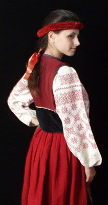
2. Жіночий стрій з північної Чернігівщини: (· сорочка додільна, КН-989/Т-34; · спідниця-андарак, КН-364; · запаска вишита, КН-1454; · пояс плетений, КН-1592/Т-794; · керсетка плисова, КН-1264; · очіпок, КН-6334). Початок ХХ ст., УЦНК "Музей Івана Гончара".
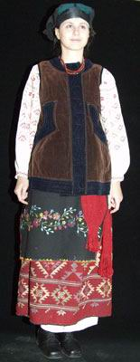
3. Жіночий стрій з центральної Чернігівщини. (· сорочка додільна, КН-366/Т-11; · спідниця з нагрудником, КН-1033; · запаска парчева, КН-1042; · пояс плетений, КН-1018/Т-792; · очіпок, КН-6332). УЦНК "Музей Івана Гончара".
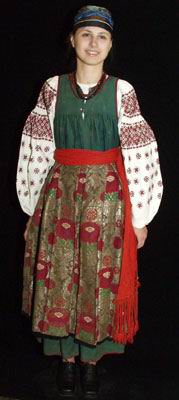
4. Дівочий стрій з Житомирського Полісся: (· сорочка вишита, КН-981; · літник тканий, КН-6472; · запаска килимова, КН-1467; · крайка, КН-6506/Т-896). УЦНК "Музей Івана Гончара".
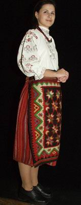
5. Жіночий стрій з Волинського Полісся: (· сорочка вишита, КН-8943; · літник тканий, КН-1021; · фартух тканий, КН-1455; · крайка ткана, КНТ-950; · хустка, КН-6566). УЦНК "Музей Івана Гончара".
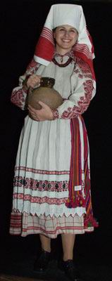
6. Жіночий стрій з Сарненського р-ну Рівненської обл.: (· сорочка вишита, КН-6828; · літник тканий, КН-6822; · запаска-фартух ткана, КН-6823; · крайка ткана, КН-218/Т-882; · намітка ткана, КН-6829). УЦНК "Музей Івана Гончара".
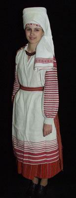
7. Жіночий стрій серпанковий з Дубровицького р-ну Рівненської обл.: (· сорочка ткана, КН-6541/Т-195; · спідниця ткана, КН-6417/Т-197; · фартух тканий, КН-9560; · крайка ткана, КНТ-965; · намітка ткана, КН-6415). УЦНК "Музей Івана Гончара".
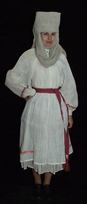
8. Жіночий стрій з північної Київщини: (· сорочка вишита, КН-491/Т-181; · літник-саян вишитий, КН-1250/Т-738; · запаска ткана, КН-856; · пояс тканий, КН-857/Т-825; · керсетка вишита, КН-1034; · очіпок вишитий, КН-1071). УЦНК "Музей Івана Гончара".
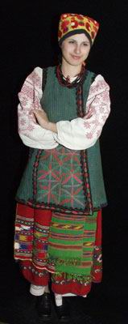
9. Дівочий стрій з Дубровицького р-ну Рівненської обл.: (· сорочка ткана, КН-6541/Т-195; · спідниця ткана, КН-6417/Т-197; · фартух тканий, КН-9560; · крайка ткана, КНТ-965). УЦНК "Музей Івана Гончара".
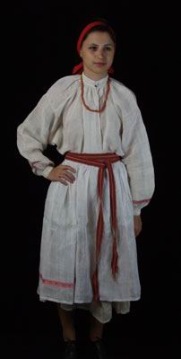
10. Житомирська обл., Олевський р-н, с. Кишин. Стрій поч. ХХ ст. (· сорочка, О-685; · спідниця (місцева назва - андарак), НД-22647; · жилет (місцева назва - кабат), НД-210; · фартух, О-5380; · пояс-крайка, О-610; · очіпок, НД-88; · хустка, О-4037). ДМУНДМ
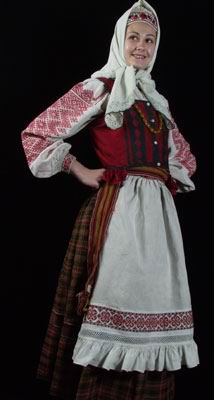
11. Волинська обл., Любомльський р-н, с. Світязь. Стрій поч. ХХ ст. (· сорочка, О-50; · спідниця, О-70; · фартух, О-46; · пояс-крайка, О-1741; · очіпок, О-2017; · хустка, О-4214). ДМУНДМ
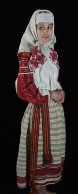
12. Рівненська обл., Дубровицький р-н, с. Крупове. Стрій серпанковий. Початок ХХ ст. (· сорочка, О-2987; · спідниця, О-806; · фартух, О-3338; · пояс-крайка, О-597; · намітка, О-2988; · коралі). ДМУНДМ
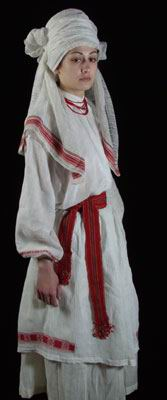
13. Київське Полісся. Костюм поч. ХХ ст. (· сорочка, О-6061; · спідниця (місцева назва - літник), НД-396; · керсетка, О-2954; · фартух, НД-9614; · намисто "добре", НД-22676). ДМУНДМ
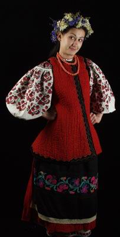
14. Чернігівське Полісся. Костюм поч. ХХ ст. (· сорочка, О-2291; · плахта, О-2295; · керсетка, НД-14779; · фартух-запаска, НД-5894; · пояс плетений, О-5215; · очіпок "кораблик", О-1091; · намітка, О-2964; · намисто "добре"). ДМУНДМ
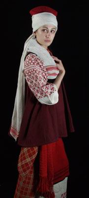
15. Крестьяне в деревняхъ Чернобыльськаго, Шепелицскаго, Боровичскаго, Максимовичскаго, Шершневскаго, Слободскаго, Рожевскаго, и коленскаго, Радомыльскаго уезда, Кіевс. Губерн. Д.П. Де ля Фліз. Альбоми. Серія "Етнографічно-фольклорна". Том 1., с. 46. - Київ, 1996 р.
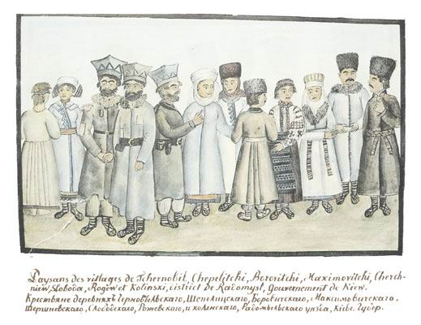
16. Мешканці Воровицького товариства, які піднімаються на верхівки сосен для збирання меду з бортей. Д.П. Де ля Фліз. Альбоми. Серія "Етнографічно-фольклорна". Том 1., с. 240. - Київ, 1996 р.
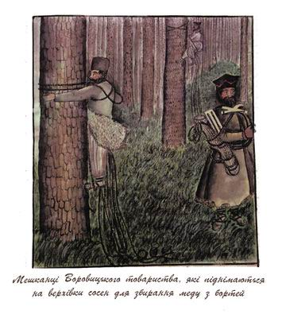
17. Мешканці Старо-Петрівського товариства. Д.П. Де ля Фліз. Альбоми. Серія "Етнографічно-фольклорна". Том 1., с. 242. - Київ, 1996 р.
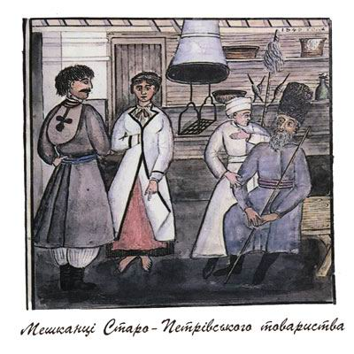
18. Мешканці Старо-Петрівського та Димерського товариств. Д.П. Де ля Фліз. Альбоми. Серія "Етнографічно-фольклорна спадщина". Том 2., с. 420. - Київ, 1996 р.
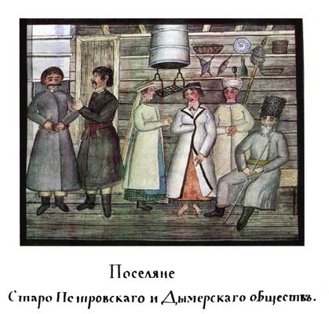
19. Мешканці Чорнобильського та Шепелицького товариств. Д.П. Де ля Фліз. Альбоми. Серія "Етнографічно-фольклорна спадщина". Том 2., с. 450. - Київ, 1996 р.
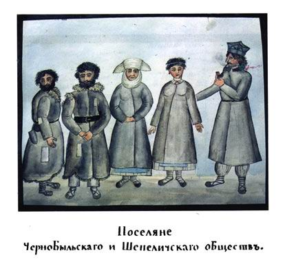
20. Мешканці Чорнобильського товариства. Д.П. Де ля Фліз. Альбоми. Серія "Етнографічно-фольклорна". Том 1., с. 238. - Київ, 1996 р.
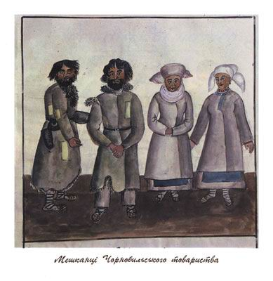
Література
1. Д.П. Де ля Фліз Альбоми Серія "Етнографічно-фольклорна". - К.,1996.- Т.1.-С.46, 154-156, 238-243.
2. Д.П. Де ля Фліз Альбоми Серія "Етнографічно-фольклорна спадщина". -К.,1999.- Т.2.-С.420, 450, 560.
3. Чубинський П.П. Труды этнографическо-статистической экспедиции в Западно-Русский край. - Спб.,1872 - 1878. - Т.7.- С.412 - 443.
4. Фундуклей Й. Статистическое описание Киевской губернии. - Спб., 1852. ч.І
5. Марачевич И. Село Кобылья Волынской губернии Новоград - Волынского уезда // Этнографический сборник. - Спб., 1853. - Вып.1. - С.294-312.
6. Шишацкий -Ильч А. Местечко Олешевка Козелецкого уезда Черниговской губернии (в историческом и этнографическом отношении)) // Черниговские Губернские Ведомости. - 1854. - №25.С - 189.
7. Жилище и одежда киевских крестьян // Киевские Губернские Ведомости,- 1855. - №21.
8. Перлштейн А. Народный быт Волынского Полесья // Волынские Губернские Ведомости. - 1866. - №7-9.
9. Шиманский И. Жизнь волынского крестьянина после освобождения его от крепостной зависимости // Волынские Губернские Ведомости. - 1866. - №6. -С.298.
10. Абрамов И. Черниговские малорусы // Живая старина. - 1905. - Вып.304. -С.513-553.
11. Афанасьев-Чужбинский А. С. Общий взгляд на быт приднепровского крестьянина. // Морской сборник.- 1856.- № 10.
12. Святский Д.О. Крестьянские костюмы в области соприкосновения Орловской, Курской и Черниговской губерний (Севский уезд Орловской губернии). - Спб.,1910.
13. Зеленин Д.К. Описание рукописей ученого архива Русского географического общества. - Пг.,1914. - Вып.1.
14. Зеленин Д.К. Женские головные уборы восточных (русских) славян// Slavia. Год V. - Вып.2.3.- Прага, 1926-1927. - С.304-312.
15. Волков Ф. Этнографические особенности украинского народа// Украинский народ в его прошлом и настоящем. - Спб.,1916.- Т.ІІ.- С.543-595.
16. Познанский Б. Одежда малоросов. // Труды двенадцатого археологического съезда в Харькове.- 1902.- Т. 3.
17. Воропай Олекса. Звичаї нашого народу. Етнографічний нарис. - Мюнхен.- 1966. Т. 2. - С.273-419.
18. Маслова Г.С. Народная одежда русских, украинцев и белорусов // Восточнославянский этнографический сборник. - М.,1956. - С.543-757.
19. Маслова Г.С. Народная одежда в восточнославянских традиционных обычаях и обрядах ХІХ - ХХ вв. - М., 1984.
20. Чижикова Л.Н. Русско-украинское пограничье. История и судьбы традиционно-бытовой культуры (Х1Х -ХХ века). - М.,1988.-С.136-241.
21. Дворникова Н.А. Русские и украинские традиции в одежде населения северо-восточных районов Украины // Советская этнография. - 1968. - №1.-С.115.
22. Малюнки П.П. Павловича // Фонди ІМФЕ НАНУ, - ф.3902 (11).
23. Українське народне мистецтво: Вбрання. - К.,1961.- Табл. 52-69.
24. Українське народне мистецтво: Тканини та вишивки. К.,1960.- Табл.34, 35, ХХІІІ.
25. Кривенок О. Українські народні узори з Київщини, Полтавщини й Катеринославщини: вирізування й настилування. - К.- 1928. - Вип. І.
26. Матейко К.І. Український народний одяг. К.,1977.-С.146-153.
27. Миронов В., Перепелиця А. Український костюм. - К., 1983.
28. Українські типажі в малюнках Івана Гончара.- К.,1990. Вип. І. 1991. В. 2.
29. Ніколаєва Т. Традиційний селянський одяг Київщини: // Етнографія Києва і Київщини. Традиції і сучасність. - К.,1986. - С.83-128.
30. Николаева Т. Украинская народная одежда: Среднее Поднепровье. - К.,1988.
31. Ніколаєва Т. Історія українського костюма. - К.,1996. - С.122-128.
32. Ніколаєва Т. Регіональні комплекси українського вбрання //Українці. Історико - етнографічна монографія у двох книгах. К.,1999.- Книга 2. - С.92-93.
33. Косміна Т.В., Васіна З.О. Українське весільне вбрання: Етнографічні реконструкції. - К., 1989. - 38с.
34. Український народний одяг. - Торонто, Філадельфія, 1992.
35. Ніколаєва Т.О., Васіна З.О. Традиційне вбрання Київщини XVIII- XIX ст..-К., 1993. - 36с.
36. Стельмащук Г.Г. Традиційні головні убори українців. - К.,1993.
37. Українська вишивка. Альбом. Автор тексту та упорядник Тетяна Кара-Васильєва.- К, 1993.
38. Костюм севрюків. Реконструкція Косміної О. // Українці. Історико - етнографічна монографія у двох книгах. - К.,1999. - Книга 1. - С.70.
39. Косміна О. Український народний костюм як полісемантична знакова система етносу // Феноменологія українського народного мистецтва: форма і зміст. Матеріали п'ятих Гончарівських читань. - К.,1998.- С.60.
40. Косміна О. Етнічна знаковість традиційного вбрання українців // Етнічність в історії та культурі: матеріали дослідження. - Одеса, 1998. - С.87-90.
41. Косміна О. Українське традиційне жіноче вбрання Київщини. Кінець ХІХ -поч. ХХ ст. -К.,1994.
42. Космина О. Этносимволическая знаковость народного костюма украинцев // Украинцы. - М., 2000. - С.238-242.
43. Булгакова Л. Народний одяг населення Київського Полісся (20-30 -х рр.. ХХ ст.) // Полісся України: матеріали історико-етнографічного дослідження. Вип.1. Київська Полісся. 1994. - Львів, 1997.- С.123-148.
44. Булгакова Л. Традиційний жіночий одяг першої половини ХХ ст.// Полісся України:матеріали історико-етнографічного дослідження.Вип.2. Овруччина.1995. - Львів, 1999.- С.159-176.
45. Домненкова Л. Белорусско-украинские культурныэ взаимодействия (по материалам народного костюма Гомельского и Черниговского Поднепровья) //Україна на межі тисячоліть: етнос, нація, культура. Книга 1-2. - К., 2000. - С.34-47
46. Білан М.С., Стельмащук Г.Г. Український стрій. - Львів, 2000. - С.155-169.
47. Забочень М.С., Поліщук О.С., Яцюк В.М.. На спомин рідного краю. Україна у старій листівці. Альбом -каталог. К.,2000.-С.357 №751 752,
48. Nowoseilski A. Lud Ukrainski.- Wilno.-1857.
49. Rulikowski E. Opis powiatu Wasylkowskiego pod wzgledem historycznum, obeyczajonym i statustycznym. Warszawa .-1850. S. 149-151.